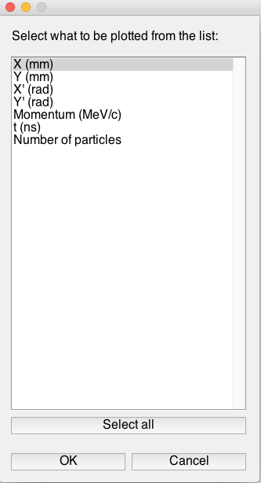
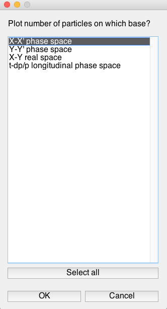
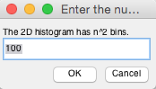
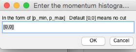
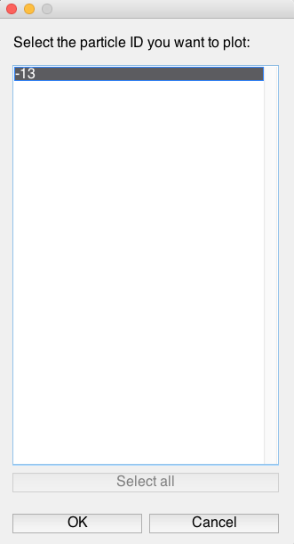
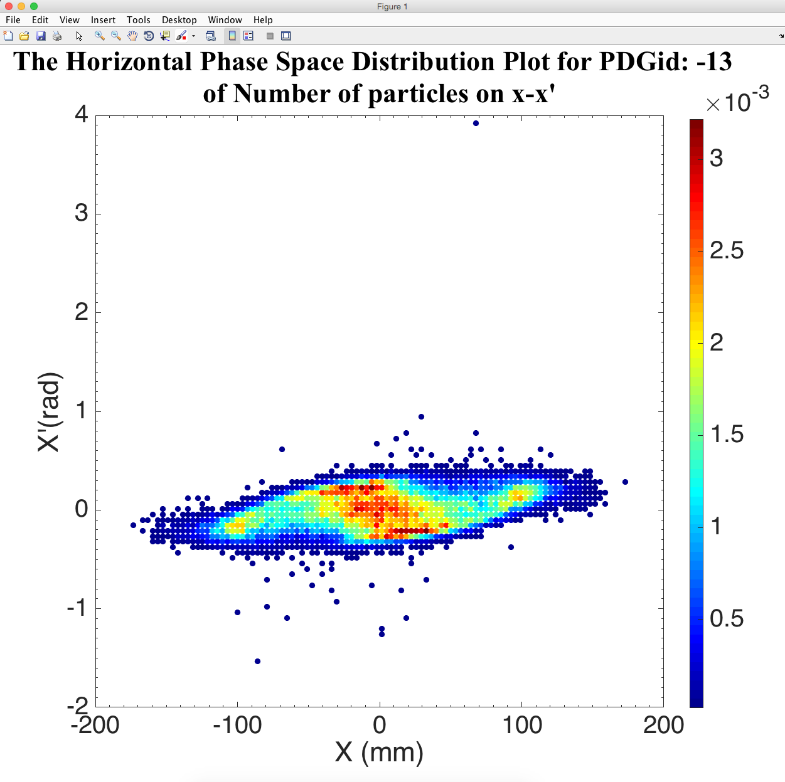

First of all and obviously, you need to have a valid MATLAB on your computer. Then, download the .m file and move it to a directory you like. I recommend that you do "Set Path" in MATLAB and add the path to this directory to the MATLAB search path. Then, in your MATLAB Command Window, type in
plot_gbeam_matlab
Then, a window will pop out asking you for the beam distribution in the G4Beamline ASCII format. Because as a personal preference, I'd like to give beam files with the default G4BL ASCII format an extension of .gbeam, plot_gbeam_matlab expects a ".gbeam" file, but you may choose "All files" to read in any extension.
Then you need to choose what to plot. If you want to create a 1-D histogram, choose which property you'd like to plot; if you want to create a 2-D histogram (scattered plot), choose "Number of particles".

Next is to choose the base, or the coordinate system to plot the property on. For example, if you chose "Number of particles" at the previous step, opt to choose from the following bases.

The next step is to choose the number of bins in your histogram. Notice that, the # of bins corresponds to each dimension, i.e. if you are plotting a 2-D histogram, the number of bins (grids) will be n-by-n.

The next window is to ask you for a momentum cut. Eventually I want to turn this into an arbitrary cut. But it is what it is now.

Then, choose which kind(s) of particles you need to plot, by their PID. Notice, that the particles won't be mixed together - even though you choose multiple particle IDs, they will be plotted separately.

Finally, you got what you want, e.g.

https://github.com/frankliuao/plot_gbeam_matlab
1. The windows can not be closed when you reach the 2nd selection window. The best way is to kill the run, or to just randomly select what you want to plot and proceed to the plotting step.